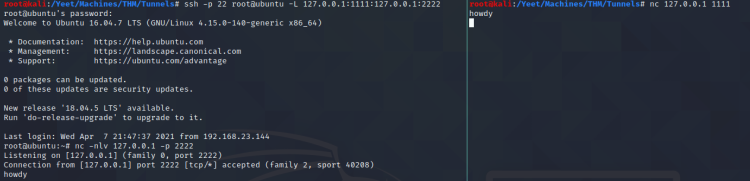
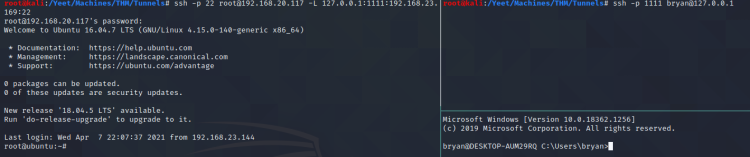
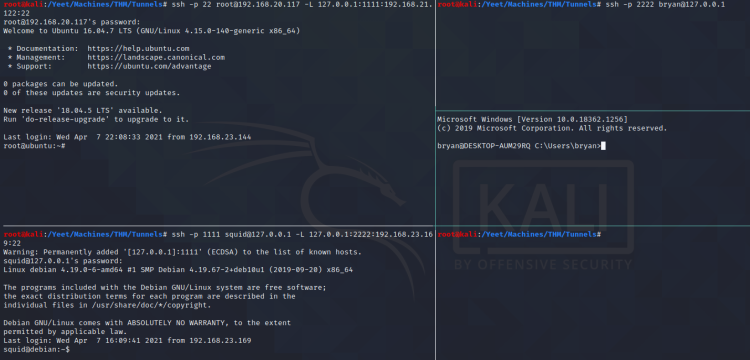
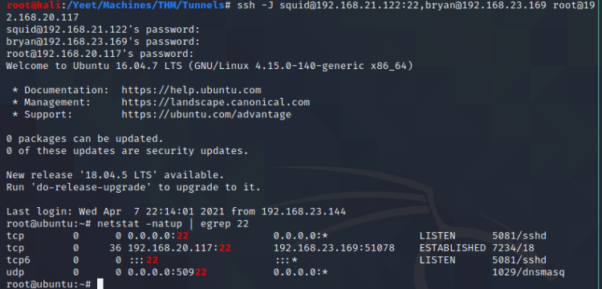

Forward (local) SSH
#Connect the target internal port 2222 to kali via 127.0.0.1:1111
ssh -p 22 bryan@192.168.1.2 -L 127.0.0.1:1111:127.0.0.1:2222
#Connect the remote box 192.168.23.169 port 22 via an ssh connection to 192.168.20.117.
ssh -p 22 root@192.168.20.117 -L 127.0.0.1:1111:192.168.23.169:22
#Jump from 192.168.20.117 to 192.168.21.122 to 192.168.23.169 and ssh in via kali 127.0.0.1:1111.
ssh -p 22 root@192.168.20.117 -L 127.0.0.1:1111:192.168.21.122:22
ssh -p 1111 squid@127.0.0.1 -L 127.0.0.1:2222:192.168.23.169:22
ssh -p 2222 bryan@127.0.0.1
#Jump from 192.168.21.122 to 192.168.23.169 to 192.168.20.117 and ssh in via kali.
ssh -J squid@192.168.21.122:22,bryan@192.168.23.169 root@192.168.20.117
